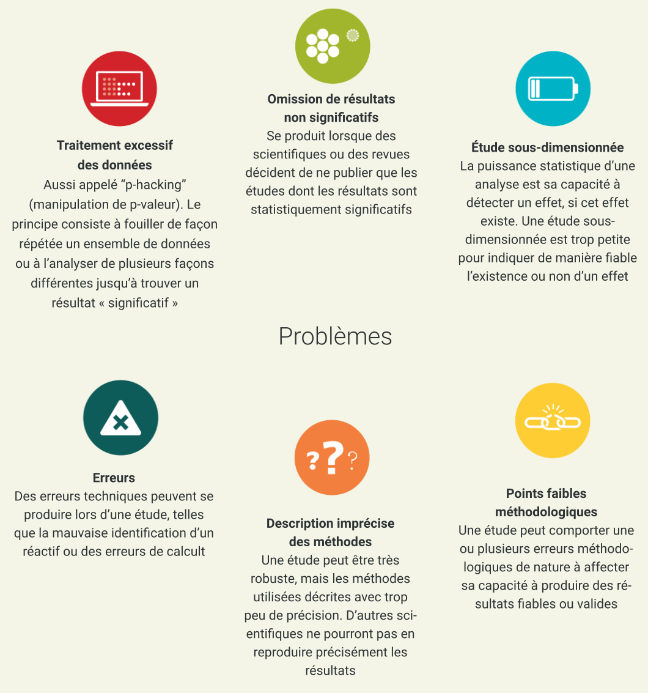

4. Recherche reproductible et Analyse des Données
De quoi parle t-on ?
La reproductibilité signifie que les données et les codes de la recherche sont mis à disposition pour que d'autres personnes aient la possibilité de parvenir aux mêmes résultats que ceux revendiqués par les productions scientifiques. Un concept proche, la réplicabilité, est quant à lui, l'acte de répéter une méthodologie scientifique afin d'obtenir des conclusions similaires. Ces deux concepts sont des éléments clés de la recherche empirique.
L'amélioration de la reproductibilité conduit à une rigueur et une qualité accrues des résultats scientifiques et donc à une plus grande confiance dans la science. Exposer au monde la succession des étapes de la recherche, du lancement d'un projet et la collecte de données jusqu'à l'interprétation et la communication des résultats, répond à une nécessité et une volonté croissante. Ces développements amènent leurs défis propres, y compris la conception de méthodes de recherche intégrées pouvant être adoptées par des collaborateurs, tout en maintenant de hauts standards d'intégrité.
Le concept de reproductibilité s'applique directement à la méthode scientifique, pierre angulaire de la science, et notamment aux cinq étapes suivantes :
Formulation d'une hypothèse
Conception de l'étude
Conduite de l'étude et collecte des données
Analyse des données
Compte-rendu de l'étude.
Chacune de ces étapes doit être clairement rapportée en fournissant une documentation claire et accessible, en rendant ainsi l'étude transparente et reproductible.

Fondement
Des facteurs globaux peuvent contribuer davantage aux causes de la non-reproductibilité, mais peuvent également conduire à la mise en œuvre de mesures spécifiques pour traiter ces causes. La culture et l'environnement dans lesquels se déroule la recherche constituent un facteur global "descendant" important. Dans une perspective "ascendante", l'éducation permanente et la formation continue des chercheurs peuvent contribuer à sensibiliser et diffuser les bonnes pratiques.
S'il est important de comprendre toute la gamme des facteurs qui contribuent à la reproductibilité, il peut également s'avérer difficile de les décomposer en mesures immédiatement applicables dans un programme de recherche existant et d'en améliorer immédiatement la reproductibilité. L'une des premières mesures à prendre consiste à évaluer l'état actuel des choses et à suivre les améliorations alors que des mesures sont prises pour accroître encore davantage la reproductibilité. Certains des problèmes courants liés à la reproductibilité de la recherche sont illustrés dans le schéma ci-après.

Source: Rapport du symposium « Reproductibilité et fiabilité de la recherche biomédicale : Comment améliorer les pratiques de recherche » Octobre 2015 PDF.
Goodman, Fanelli, & Ioannidis (2016) [PDF] notent qu'en épidémiologie, en biologie computationnelle, en économie et dans les essais cliniques, la reproductibilité est souvent définie comme :
"la capacité d'un chercheur à reproduire les résultats d'une étude antérieure en utilisant les mêmes matériaux que ceux utilisés par le chercheur initial. C'est-à-dire qu'un deuxième chercheur pourra utiliser les mêmes données brutes pour construire les mêmes fichiers d'analyse et mettre en œuvre la même analyse statistique afin de tenter de produire les mêmes résultats".
Ceci est distinct de la réplicabilité : "qui fait référence à la capacité d'un chercheur à reproduire les résultats d'une étude antérieure en suivant les mêmes procédures, mais en collectant de nouvelles données". Une façon plus simple de définir cela pourrait être de dire que la reproductibilité porte sur les méthodes, alors que la réplicabilité porte sur les résultats.
La reproductibilité peut être évaluée à plusieurs niveaux différents : au niveau d'un projet individuel (par exemple : un article, une expérience, une méthode ou un jeu de données), au niveau d'un chercheur individuel, d'un laboratoire ou d'un groupe de recherche, d'une institution ou même d'un domaine de recherche. Des critères et des points d'évaluation légèrement différents peuvent s'appliquer à ces différents niveaux.
Par exemple, une institution maintiendra des pratiques de reproductibilité si elle institue des politiques récompensant les chercheurs qui mènent des recherches reproductibles. D'autre part, un domaine de recherche pourra être considéré comme ayant un niveau de reproductibilité plus élevé, s'il développe des ressources gérées par la communauté favorisant et permettant des pratiques de recherche reproductibles, telles que les dépôts de données, ou des normes communes de partage des données.

Objectifs de la formation
Trois objectifs majeurs doivent être abordés ici :
Comprendre l'importance de la création de recherches reproductibles.
Comprendre la mise en place globale de la recherche reproductible (y compris le choix de la méthode de travail, la gestion des données et les comptes-rendus dynamiques).
Garder en tête les différentes étapes du processus de reproductibilité, ainsi que les ressources pouvant être utilisées.
Éléments clés

Connaissances
Voici une liste indicative de points à retenir sur la reproductibilité:
Ce qu'est la «crise de la reproductibilité», les méta-analyses de la reproductibilité.
Les principes de reproductibilité, d'intégrité et d'éthique en matière de recherche.
Les options et environnements informatiques qui permettent une configuration collaborative et reproductible.
Les facteurs qui affectent la reproductibilité de la recherche.
Les documentations d'analyse des données et des flux de travail en recherche ouverte.
Les environnements d'analyse reproductibles (virtualisation).
Comment aborder les «Degrés de liberté des chercheurs» (Wicherts et al., 2016).

Compétences
Il y a plusieurs conseils pratiques à garder à l'esprit lorsqu'on souhaite lister les compétences particulières nécessaires pour assurer la reproductibilité de la recherche. Les bonnes pratiques en matière de reproductibilité empruntent aux pratiques générales de la science ouverte, mais leur intégration apporte des avantages aux chercheurs eux-mêmes, qu'ils choisissent ou non de partager leur recherche. La raison pour laquelle intégrer les bonnes pratiques de reproductibilité bénéficie au chercheur individuel est que celles-ci améliorent la planification, l'organisation et la documentation de la recherche. Ci-dessous, nous décrivons un exemple de mise en œuvre de la reproductibilité dans un cycle de recherche avec des références à ces pratiques dans le manuel.

1. Planifiez la reproductibilité avant de commencer
Créez un plan d'étude ou un protocole.
Commencez la documentation dès le lancement de l'étude en rédigeant un plan ou un protocole d'étude qui inclue la conception et les méthodes d'étude que vous proposez. Utilisez les directives du réseau Equateur (Equator Network), le cas échéant. Faites le suivi des modifications apportées à votre plan ou protocole d'étude à l'aide de logiciel de contrôle de versions (Version Control). Calculez la puissance ou la taille d'échantillon nécessaires et rapportez ce calcul dans votre protocole, car les études qui manquent de puissance ont moins de chances d'être reproductibles.
Choisissez des outils et matériels reproductibles
Sélectionnez des anticorps qui fonctionnent en utilisant un moteur de recherche d'anticorps comme CiteAb. Augmentez vos chances d'être reproductible en utilisant des lignées cellulaires authentifiées par le Comité International d'Authentification des Lignées Cellulaires International Cell Line Authentication Committee). Dans la mesure du possible, choisissez des logiciels et matériels avec lesquels vous pouvez conserver la propriété de vos recherches et qui vous permettent de migrer vos recherches hors de la plate-forme pour les réutiliser (voir la section Logiciels de Recherche Libres et Codes Source Ouverts).
Mettez en œuvre un projet reproductible
Centralisez et organisez la gestion de votre projet à l'aide d'une plateforme en ligne, une centrale de dépôt en ligne, ou d'un dossier pour tous vos fichiers de recherche. Vous pouvez utiliser GitHub pour stocker des fichiers de projet ensemble ou tout gérer à l'aide d'un cahier de laboratoire électronique tel que Benchling, Labguru, SciNote. Au sein de votre projet centralisé, adoptez les bonnes pratiques en séparant vos données de votre code dans différents dossiers. Paramétrez vos données brutes en lecture seule et séparez-les des données traitées (voir 2 Données et Outils de la Recherche Ouverte).
Lors de la sauvegarde et de l'enregistrement de vos fichiers de recherche, choisissez des formats et des noms de fichiers informatifs permettant la réutilisation. Les noms de fichiers doivent être lisibles à la fois par la machine et par l'homme (voir 2 Données et Outils de la Recherche Ouverte). Dans votre analyse et votre code logiciel, utilisez des chemins relatifs. Évitez les formats de fichiers propriétaires et utilisez des formats de fichiers ouverts (voir 6 Formats de fichiers et licences ouvertes).

2. Gardez des traces de vos travaux
Consignation dans un registre
Consignez à l'avance les informations importantes relatives à la conception et à l'analyse des études afin d'accroître la transparence et de contrer le biais consistant à ne pas publier des résultats négatifs. Parmi les outils gratuits que vous pouvez utiliser pour votre premier enregistrement, on trouve : AsPredicted, Open Science Framework et Registered Reports. Il est recommandé aux essais cliniques d'utiliser Clinicaltrials.gov.
Contrôle de versions
Suivez les modifications apportées à vos fichiers, en particulier à votre code d'analyse, grâce au contrôle de versions (Voir la section 3 Logiciels de Recherche Ouverts et de Source ouverte).
Documentation
Documentez tout ce qui a été fait à la main dans un fichier LISEZMOI (README). Créez un dictionnaire de données (également appelé "codebook", "livre de code") pour décrire les informations importantes concernant vos données. Pour une introduction facile, utilisez le module d'organisation des données de Karl Broman et référez à la section 2 Données et Outils de la Recherche Ouverte.
Programmation lettrée
Envisagez d'utiliser Jupyter notebooks, KnitR, Sweave ou d'autres approches de la programmation lettrée (literate programming) pour intégrer votre code à votre récit et à votre documentation.
3. Partagez vos recherches et attribuez-leur des licences
Données
Évitez les fichiers annexes, faîtes le choix d'une licence permissive acceptable et partagez vos données à l'aide d'un dépôt. Suivez les bonnes pratiques décrites dans le chapitre 2 Données et Matériels de la Recherche Ouverte.
Matériels
Partagez vos documents afin qu'ils puissent être réutilisés. Stockez les réactifs dans des entrepôts tels que Addgene, The Bloomington Drosophila Stock Center et ATCC pour les rendre facilement accessibles à d'autres chercheurs. Pour plus d'informations, consultez le paragraphe Matériaux ouverts dans la section 2 Données et matériaux de la Recherche ouverte.
Logiciels, notebooks et conteneurs
Attribuez une licence à votre code pour indiquer les conditions auxquelles vous permettez qu'il soit (ré)utilisé. Partagez les notebooks avec des services tels que mybinder qui permettent de visualiser et d'exécuter l'intégralité du notebook sur des ressources partagées. Partagez des conteneurs ou des notebooks avec des services tels que Rocker ou Code Ocean. Suivez les meilleures pratiques décrites dans le chapitre 3 Logiciels de recherche libres et Code source ouvert.

4. Rendez compte de vos recherches de manière transparente
Rendez compte de vos méthodes et interventions et publiez-les de manière explicite, transparente et exhaustive, afin de permettre leur réplication. Les lignes directrices du réseau Equateur (Equator Network]), les outils tels que Protocols.io ou des processus tels que Registered Reports peuvent vous aider à rendre compte de manière reproductible. N'oubliez pas de publier vos résultats sur une plateforme d'enregistrement publique (telle que ClinicalTrials.gov ou SocialScienceRegistry) dans l'année suivant la fin de votre étude, quelle que soit la nature ou l'orientation de vos résultats.

Questions, obstacles et idées fausses reçues
Q : "Tout est dans l'article ; n'importe qui peut reproduire cette recherche à partir de là !
R : C'est l'une des idées fausses les plus répandues. Même en disposant d'une description extrêmement détaillée des méthodes et du processus de travail utilisées pour parvenir au résultat final, cela ne suffira pas, dans la plupart des cas, pour le reproduire. Il peut y avoir plusieurs raisons à cela, notamment des environnements de calcul différents, des différences entre les versions de logiciel, des biais implicites qui n'ont pas été clairement énoncés, etc.
Q : "Je n'ai pas le temps d'apprendre à mettre en place un processus de travail reproductible".
R : Outre le nombre important de services en ligne disponibles gratuitement que l'on peut associer et qui facilitent la mise en place d'un processus de travail complet, consacrer du temps et des efforts à un processus reproductible augmentera la validité scientifique de vos résultats finaux, tout en réduisant au minimum le temps nécessaire pour relancer le processus ou l'étendre lors d'études ultérieures.
Q : "La terminologie décrivant la reproductibilité est difficile à saisir".
R : Cf. Barba (2018) : Terminologies for Reproducible Research (Discussion sur la terminologie décrivant la reproductibilité et la réplicabilité).

Acquis de la formation
Comprendre la nécessité d'une recherche reproductible et son raisonnement.
Être capable d'établir un processus de travail reproductible pour une tâche servant d'exemple.
Connaître les outils de soutien à la recherche reproductible.

Lectures complémentaires
- Button et al. (2013). Power failure: why small sample size undermines the reliability of neuroscience. doi.org/10.1038/nrn3475
- Karl Broman (n.y.). Data Organization. Choose good names for things. kbroman.org
:heavy_plus_sign: 2023
- Konrad Hinsen. Ined. (2022, 7 novembre). Le pourquoi et le comment de la recherche reproductible. [Vidéo]. Canal-U https://www.canal-u.tv/134662. (Consultée le 8 février 2023)
- Amiard Anabelle, Baczynski Céline, Blanchet Christophe, Brevern Alexandre de, Dorlanne-Messiaen Emmanuelle, Grognard Eric, Kisselova Galina, Malpertuy Alain, Jamet Jeanne Menez, Racle Ivan et Rouger Céline, « Le cahier de laboratoire électronique (CLE) », STP Pharma Pratiques, 23 décembre 2011, vol. 21, no 6, p. 475. https://www.hal.inserm.fr/inserm-00680791
- COSO, « Grille de critères pour le choix d’un cahier de laboratoire électronique », juillet 2022, consulté le 8 février 2023, https://www.ouvrirlascience.fr/grille-de-criteres-pour-le-choix-dun-cahier-de-laboratoire-electronique.
- Utiliser un cahier de laboratoire numérique [Bonnes pratiques] https://www.datacc.org/bonnes-pratiques/utiliser-un-cahier-de-laboratoire-numerique/
- Typologie de 8 cahiers de laboratoire https://www.datacc.org/bonnes-pratiques/utiliser-un-cahier-de-laboratoire-numerique/typologie-de-8-cahiers-de-laboratoire-a-destination-des-chimistes/